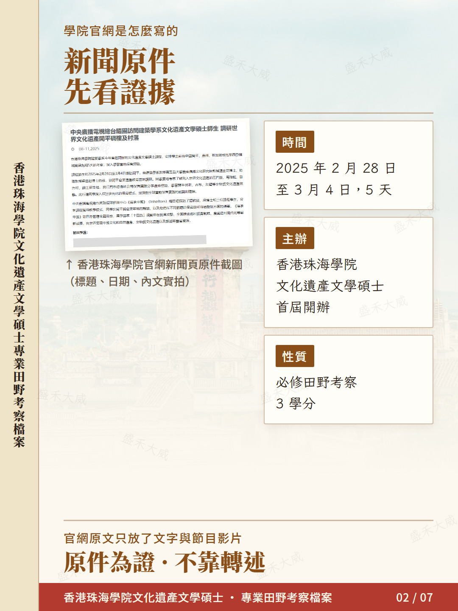
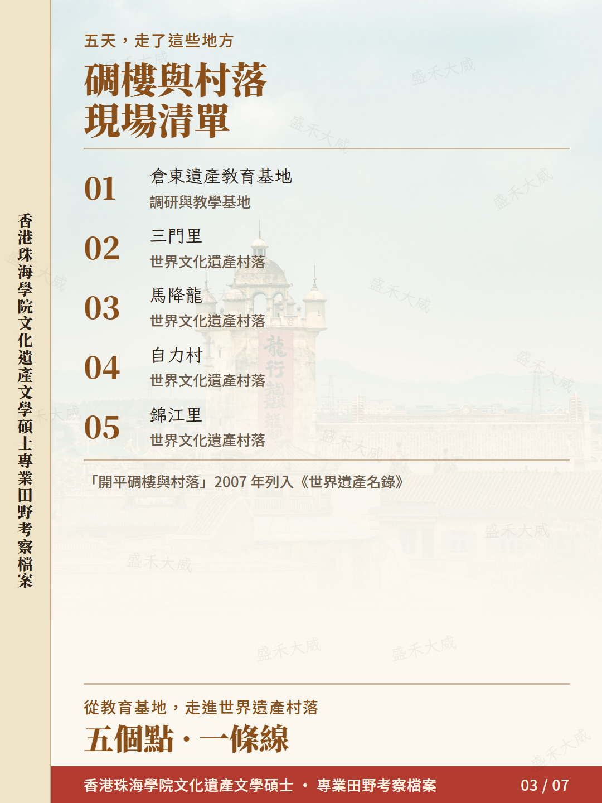
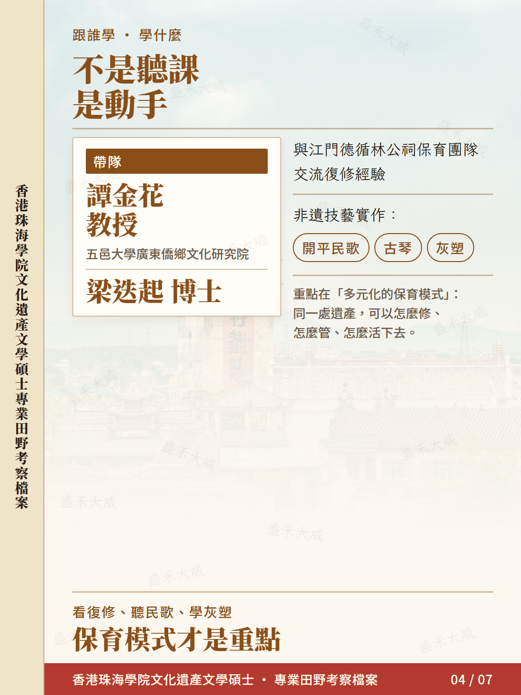
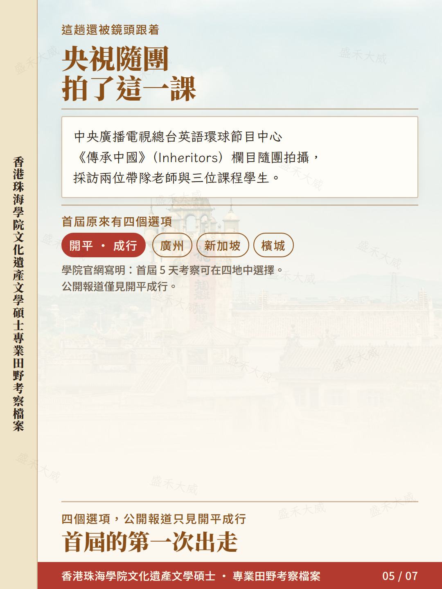
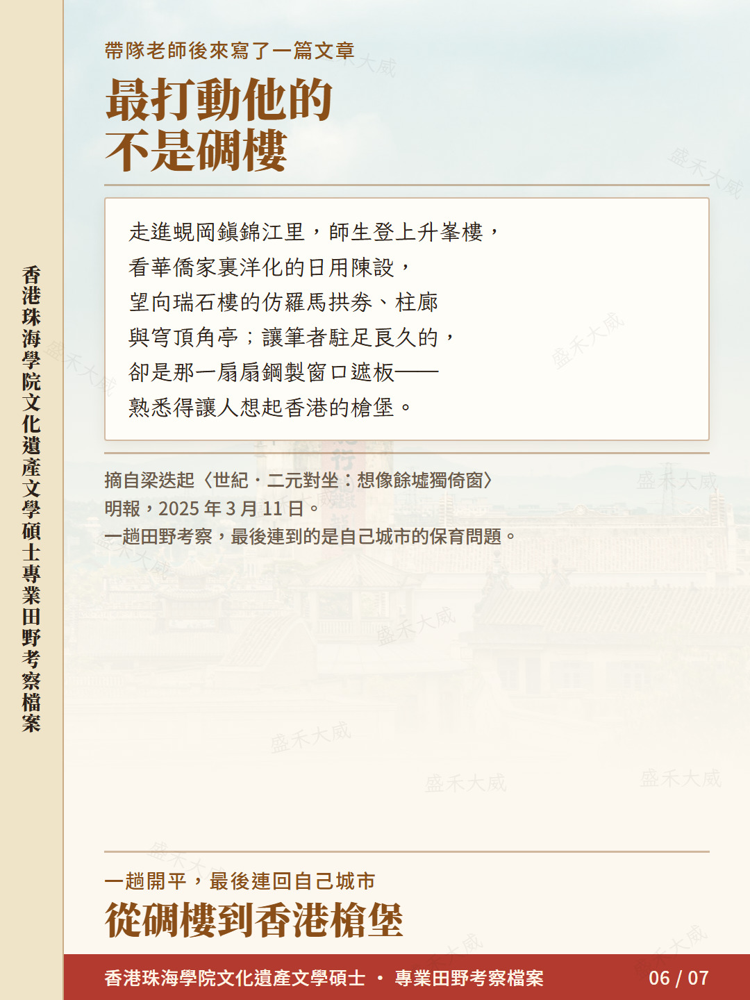
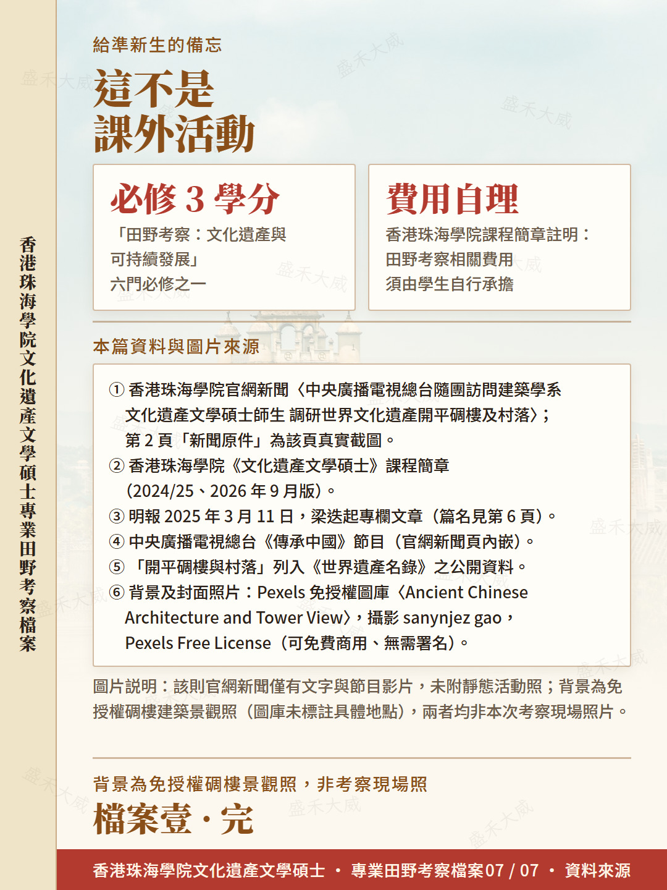

開平碉樓與村落首屆必修田野考察 · 廣東開平
首屆 MACH 的 3 學分必修田野考察







文字版全文Full text
我明年 1 月入學香港珠海學院文化遺產文學碩士，最近幹了件事：把往屆的田野考察從頭扒了一遍。
先説結論——它不是春遊，是必修課。課程裏有一門「田野考察：文化遺產與可持續發展」，3 學分，六門必修之一；簡章還寫明，考察相關費用由學生自己承擔。所以提前搞清楚去哪、幹什麼，真不是多此一舉。
第一屆（2024 年開課）的第一次出行，是 2025 年 2 月 28 日到 3 月 4 日，五天，去廣東開平。
帶隊的是譚金花教授（五邑大學廣東僑鄉文化研究院）和梁迭起博士。落腳點在開平倉東遺產教育基地，實勘了列入《世界遺產名錄》的三門里、馬降龍、自力村、錦江里。
我原以為就是看幾棟老樓，結果內容比想像中重得多：
· 和江門德循林公祠的保育團隊交流復修經驗
· 學開平民歌、古琴、灰塑這些非遺技藝
· 真正要討論的是「同一處遺產，可以有哪些不同的保育模式」
更意外的是，中央廣播電視總台《傳承中國》（Inheritors）欄目組隨團拍攝，採訪了兩位老師和三位學生。官網還寫明，首屆原本有開平、廣州、新加坡、檳城四個選項，公開報道裏只看到開平成行。
最打動我的，是帶隊老師後來在《明報》寫的那段：走進錦江里，師生登上升峯樓，看華僑家裏洋化的舊陳設，望向瑞石樓的仿羅馬拱券、柱廊和穹頂角亭；但讓他站最久的，是一扇扇鋼製窗口遮板——那種熟悉感，讓他想起香港的槍堡。
一趟開平的田野課，最後連回的是自己城市的保育問題。這大概就是「田野」兩個字的分量。
給同樣在準備入學的人三個提醒：
1. 這是 3 學分必修，別當成課外活動
2. 五天離港，時間和預算都要提前留出來
3. 考察費用自理，簡章寫得很清楚
資料全部來自學院官網新聞、兩版課程簡章和帶隊老師公開發表的文章，出處放在圖 7。第 2 頁那張是官網新聞頁的真實截圖——這篇新聞只有文字和節目視頻，沒有靜態活動照，所以我沒拿別處的照片來湊。
本篇资料与图片来源Sources
- 香港珠海學院官網新聞〈中央廣播電視總台隨團訪問建築學系文化遺產文學碩士師生 調研世界文化遺產開平碉樓及村落〉；第 2 頁為該新聞頁真實截圖。
- 香港珠海學院《文化遺產文學碩士》課程簡章（2024/25、2026 年 9 月版）。
- 明報 2025 年 3 月 11 日，梁迭起專欄文章〈世紀．二元對坐：想像餘墟獨倚窗〉。
- 中央廣播電視總台《傳承中國》節目（學院官網新聞頁內嵌影片）。
- 「開平碉樓與村落」列入《世界遺產名錄》之公開資料。
- 背景及封面照片：Pexels 免授權圖庫〈Ancient Chinese Architecture and Tower View〉，攝影 sanynjez gao，Pexels Free License（可免費商用、無需署名）；圖庫未標註具體地點，非本次考察現場照片。
说明：本页图卡为小红书发布版本，采用港式繁体；活动照片为新闻／报道已刊配图，仅作资料引证。文中凡提及该专业，均使用完整名称「香港珠海學院文化遺產文學碩士」。